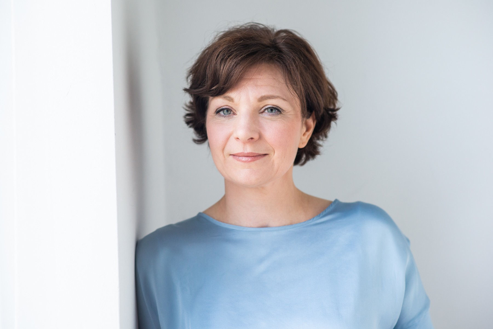

Einfühlsames Kinder- und Jugendcoaching bei Schulverweigerung, behutsam, kindgerecht und wirksam. Ohne Druck, ohne Zwang, mit echtem Verständnis für Ihr Kind.
Kostenfreies Telefonat sichernWählen Sie Ihren Weg. Heike Windisch freut sich auf Ihre Nachricht.
Alle Anfragen werden vertraulich behandelt.
Sie sind nicht die einzige Familie, die gerade so einen Morgen erlebt.
Schulverweigerung ist kein Erziehungsversagen. Es ist ein Hilferuf, der gehört werden will.
Statt Druck aufzubauen, finden wir gemeinsam mit Ihrem Kind heraus, was wirklich dahintersteckt, und lösen das Problem an der Wurzel.
In einem geschützten Rahmen finden wir heraus, was hinter der Schulverweigerung steckt: Angst, Überforderung, Mobbing oder eine Lernschwierigkeit.
Mit kreativen, wissenschaftlich fundierten Methoden bauen wir Selbstvertrauen auf. Ihr Kind lernt, eigene Lösungen zu finden.
Schritt für Schritt zurück in den Schulalltag, mit neuem Selbstvertrauen statt Druck und Zwang.

Seit vielen Jahren begleite ich Kinder, Jugendliche und ihre Eltern in genau solchen Krisen. Mein Ansatz ist klientenzentriert, behutsam und auf die Stärken Ihres Kindes ausgerichtet, nicht auf seine Defizite.
Ja. Anders als reine Gespräche mit der Schule oder gut gemeinte Ratschläge setzt unser Coaching direkt bei der Ursache an, nicht beim Symptom. Genau deshalb wirkt es oft dort, wo andere Ansätze ins Leere liefen.
Das ist individuell verschieden, doch viele Familien berichten bereits nach den ersten Sitzungen von spürbarer Entlastung im Alltag.
Ja. Im kostenfreien Telefonat lernen wir uns kennen, ich höre mir Ihre Situation an, und wir besprechen gemeinsam, ob und wie ich Ihnen helfen kann. Keine Verpflichtung.
Nein. Wir gehen Schritt für Schritt vor und passen das Tempo an Ihr Kind an. Druck und Zwang sind ausdrücklich nicht Teil unseres Ansatzes.
Die Kosten richten sich nach dem individuellen Bedarf Ihres Kindes. Das besprechen wir transparent im kostenfreien Telefonat.
Sie müssen das nicht allein lösen. Vereinbaren Sie jetzt Ihr kostenfreies, unverbindliches Telefonat mit Heike Windisch.
Kostenfreies Telefonat sichern